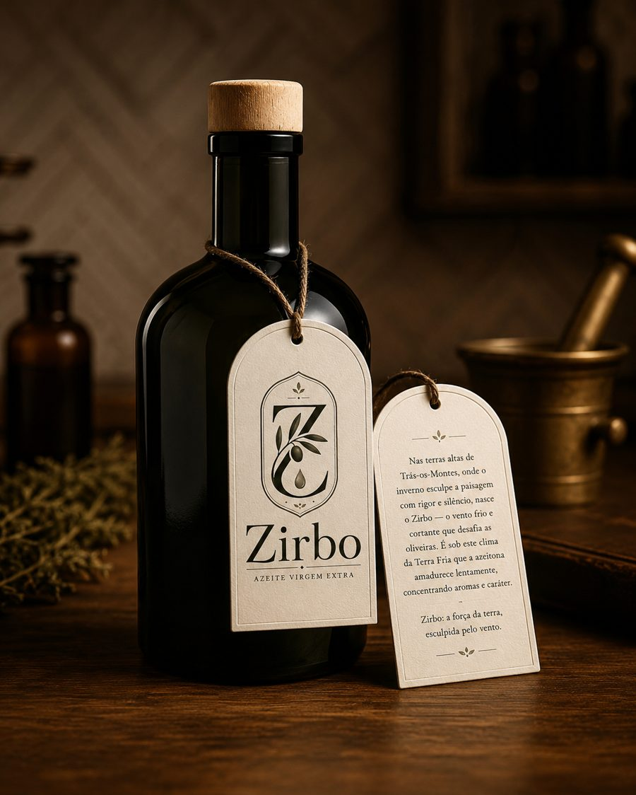
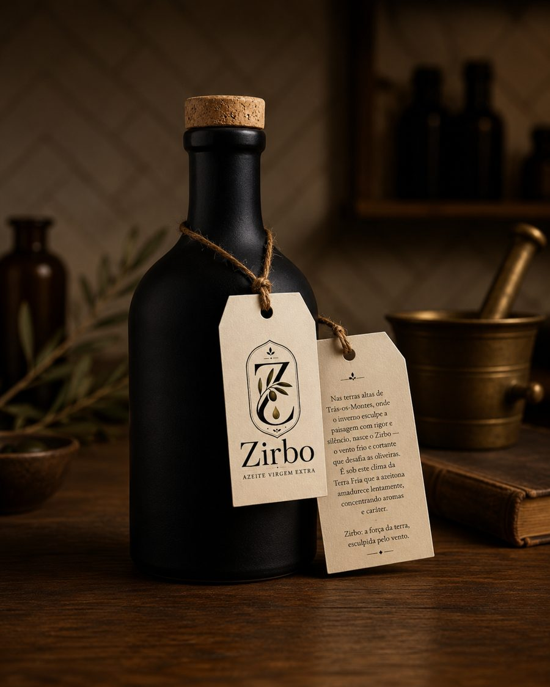
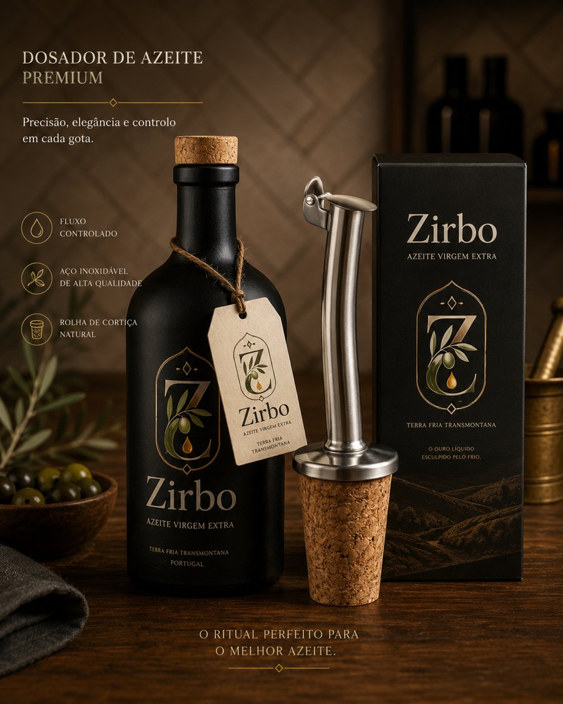
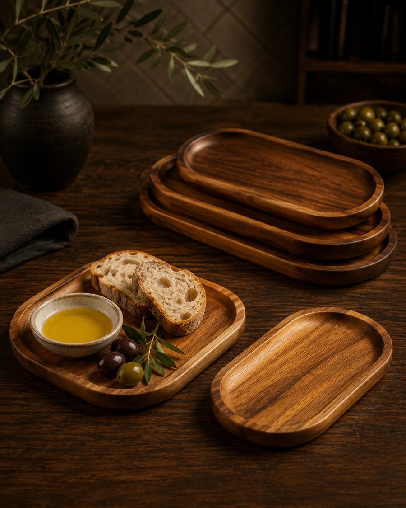

O azeite é o primeiro produto. À sua volta, estamos a desenhar uma coleção pequena e bem escolhida de acessórios para a mesa.
A loja Zirbo abre com o essencial: o azeite. Os restantes produtos estão em desenvolvimento e serão lançados por fases, à medida que a marca cresce — todos pensados para prolongar a experiência do azeite, da cozinha à mesa.
 Lote piloto
Lote piloto
Virgem extra da Terra Fria Transmontana, em lata de alumínio que protege da luz e conserva o azeite. Produção limitada e numerada.
16,50 € (PVP indicativo — pode ir até 19,00 €) Ver ficha do produto →
Em estudoFrasco “Farmácia”, vidro verde antigo, 500 ml, boca de cortiça. O verde do vidro filtra a luz como a lata, mas com o toque nostálgico de um frasco de boticário — fabrico alemão, forma clássica.

Em estudoJarro de grés preto, opaco, 500 ml, boca de cortiça. O barro cozido a alta temperatura bloqueia toda a luz e mantém o azeite fresco — a opção com o carácter mais rústico e mais próximo do lagar.
Estas duas edições estão a ser avaliadas como alternativas premium à lata, para ocasiões de oferta ou coleção. Frascos de fornecedor especializado; ficha técnica sujeita a confirmação final. A lata continua a ser o formato principal do lote piloto.

Em breveRolha de cortiça natural com bico doseador em aço inoxidável embutido — transforma qualquer garrafa Zirbo num dosador de precisão. Fluxo controlado, sem pingos nem desperdício. Vem em caixa de oferta própria.
Vidro e aço inoxidável, com bico doseador anti-pingo para servir com precisão à mesa — sem desperdício, sem escorrências.
A definir
Em estudoMadeira de castanho transmontano, com dois encaixes — um para azeite Zirbo e outro para um segundo azeite ou vinagre, lado a lado, para comparar em cada prova.
A definirTrês miniaturas do mesmo lote ou de colheitas diferentes, para descobrir o Zirbo antes do formato completo.
A definirUma lata Zirbo em caixa rígida, com o número do lote gravado — pensada para prendas de assinalar.
A definirUm pequeno conjunto de cartões com as receitas típicas da região, para acompanhar a primeira lata.
A definirFeito a partir da borra do lagar, seguindo uma tradição transmontana de aproveitamento total da azeitona.
A definirNotas de folha de oliveira e xisto molhado — o inverno transmontano traduzido em cera.
A definirLinho bordado com o emblema Zirbo, inspirado nos enxovais tradicionais transmontanos.
A definirOs produtos marcados como “Em breve” ou “Em estudo” ainda não têm data, preço nem especificações finais — esta página funciona como roteiro da coleção, não como catálogo de encomenda. A loja completa, com pagamento e envios, será ativada depois do lançamento do lote piloto de azeite.